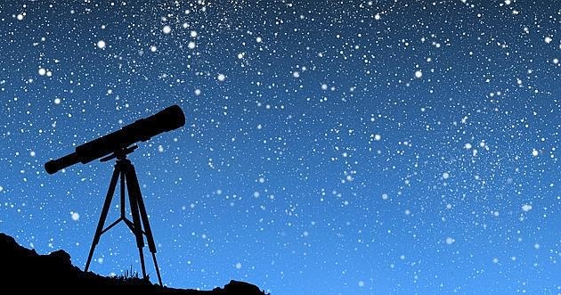

¿Qué es la astronomia?
La astronomía estudia los cuerpos celestes, su comportamiento, características,
evolución, leyes que los rigen y otros datos, tanto en conjunto como por separado y,
con la información que recogen, van definiendo y moldeando las Leyes del Cosmos.
Además, estos cuerpos celestes pueden organizarse en formaciones mayores: sistemas planetarios,
constelaciones, galaxias, etc.

Imagen de cuerpos celestes.
¿Se puede observar el esapcio, los planetas, las estrellas etc?
Se denomina telescopio al instrumento óptico que permite observar objetos lejanos
con mucho más detalle que a simple vista al captar radiación electromagnética, tal como la luz.
Es un utensilio fundamental en astronomía, y cada desarrollo o perfeccionamiento de este instrumento
ha permitido avances en nuestra comprensión del Universo.

Imagen de un telescopio, en el cual se puede contemplar el espacio.